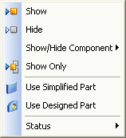

Edit a PMI model view definition
There are a variety of ways you can modify the PMI model view when you are in model view edit mode.
Edit the model in the model view
-
In PathFinder, right-click a model view name.
Model view names are listed in the PMI collection, under Model Views.
-
From the model view shortcut menu, choose Edit Definition.
The Model view Edit Definition command bar is displayed.
The view orientation, render mode, and annotations and dimensions associated with the selected model view are displayed in the graphics window.
-
Do either of the following:
-
On the command bar, click the Options button if you want to change the model view definition.
The Model View Options dialog box is displayed. See below, In the Model View Options dialog box, you can:
-
On the command bar, click the Model View Display group button to make changes to the model itself.
The model view edit window changes to display appropriate editing commands on the ribbon. See below, In the Graphics Window, you can. You also can use the shortcut commands in PathFinder to change the display of PMI elements and the model orientation in the view.
-
-
When you are done editing the display of assembly parts and PMI elements in the 3D model view, on the ribbon, click Close Model View.
-
To end the edit definition session and save the changes to the model view definition using command bar, press Enter.
Edit the model view display
You can use the Home tab→Select command and the shortcut commands in PathFinder to edit the model view orientation, PMI element visibility, PMI properties, and to adjust the placement of PMI elements so they do not overlap.
Change model view orientation
-
Do the following:
-
Use any of the commands on the View tab to change the model view orientation: Common Views, Spin About Axis, Rotate, Look At Face.
-
Apply the active view orientation to the model view definition using the Set View Orientation command on the model view shortcut menu.
-
Show or hide individual PMI elements
-
Set or clear the check box in front of an individual PMI element to add or remove it from the view.
Tip:Only elements which are shown in the view are saved with it when you leave the edit session.
Adjust PMI element placement
-
Right-click an element in PathFinder or in the graphics window and choose the Move Dimension command.
Modify PMI properties
-
Right-click an element in PathFinder or in the graphics window and choose the Properties command to change the format, text, and other properties.
In the graphics window, you can:
-
Change the model by editing the value of PMI dimensions or moving faces.
-
Right-click PMI annotations, dimensions, and model components to change the properties of individual items.
In the Model View Options dialog box, you can:
Change model view render mode
-
Choose None, Visible Edges, Visible and Hidden Edges, Shaded, or Shaded with Visible Edges in the Model View Options dialog box.
Tip:The render mode commands on the command ribbon and on the status bar cannot be used with 3D model views.
-
Select the Apply View command on the model view shortcut menu.
-
You can set and modify the display settings for a 3D section view that has been included in the model view using the options on the Model View Options dialog box.
Modify 3D section view display
-
Set or clear the Show Cutting Plane option
-
From the list, choose which cut parts are visible.
You have many options for editing the display settings of existing PMI elements associated with the model view, as well as for creating new PMI annotations and dimensions.
In the graphics window, you can:
-
When working in an assembly model, you can change the display of model components to Use Simplified Parts or Use Designed Parts.

From PathFinder, you can:
-
Change model view orientation.
-
Use any of the commands on the View tab to change the model view orientation.
-
Apply the active view orientation to the model view definition using the Set View Orientation command on the model view shortcut menu.
-
-
Show or hide individual PMI elements in the view.
-
Adjust the 3D position of annotations and dimensions using the Move Dimension command.
-
Change the format, text, and other properties of individual annotations and dimensions using the Properties command.
Note:Only elements which are shown in the view are saved with it when you leave the edit session.
Using the Select Tool, you can:
-
Edit a model feature or part. The command bar and ribbon display the options specific to the environment you are working in.
Using the PMI commands, you can:
-
Add new PMI dimensions and annotations.
-
Change model view render mode. To update the model view with the new render mode, select the Apply View command on the model view shortcut menu.
-
Modify the display settings for a 3D section view included in the model view.
When you are done editing the display of assembly parts and PMI elements in the 3D model view, on the ribbon, click Close Model View.
To end the edit definition session and save the changes to the model view definition, press Enter.
How do I
Show model views in a paletteManipulate a PMI model view
Reorient a PMI model view
Use a 3D section view in a PMI model view
Learn more
Creating 3D model views with PMILook up more details
Create a PMI model viewReview command (PMI model views)
Review PMI model views
Activate or deactivate a view
Model View Options dialog box
Add To Model View dialog box
Remove From Model View dialog box
Edit Definition command (PMI, sections, model views)
Set View Orientation command
Upload Model Views command
Quick links
PMI dimensions and annotationsPMI in drawing views